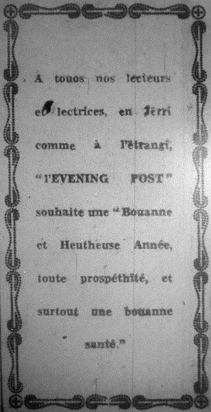
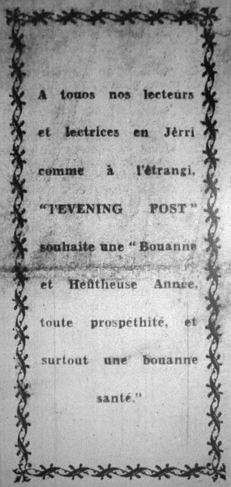

|

1934 |

1935 |
|
A touos nos lecteurs et lectrices en Jêrri comme à l'êtrangi, "l'Evening Post" souhaite une "Bouanne et Heûtheuse Année, toute prospéthité, et surtout une bouanne santé." |
A touos nos lecteurs et lectrices en Jêrri comme à l'êtrangi, "l'Evening Post" souhaite une "Bouanne et Heûtheuse Année, toute prospéthité, et surtout une bouanne santé." |
"L'Evening Post" souhaite unne bouonne année à tuous ses amins d'la ville et d'la campagne. Toute prospéthité, tout bonheur, et tout succés dans toutes lus affaithes.
Evening Post 2/1/1933
Malgré qu'notre gâzette est publiée en angliais, je savons parfaitement bain que parmi nos lecteurs, campagnards comme villais, i'y en a des chents qu'aiment à liéthe un mio d'Jerriais; ch'est pourtchi j'avons pensé que che ne s'sait pas une mauvaise idée de lus offri nos miyeurs souhaits pour la Nouvelle Année de djaix-neu-chents-trente-six dans le langage de notre vier îlot d'Jerri, langage que malheutheusement, tant d'monde voudraient vaie dispathaître.
C'menchons d'abord au haut de l'êtchelle. Une Bouanne Année à Moussieu l'Bailli, notre Chef Magistrat, qui jouit d'une si grande popularité parmi touos les habitants. Piaîsse-t-i joui d'une bouanne santé et n'être pas trop tracassé par les problèmes difficiles qui son insépthablyes de sa haute et responsablye office.
A Messieux les Juges et à touos les Membres des Etats, qui dans l'couothant de l'année s'en vont être appelés à passer des louais et des régliéments sus plusieurs tchestions de la pus haute împortance.
A touos nos commercants, p'tits et grands, sustout cheux-là qui nos font l'honneur de publier lus annonces dans nos colonnes, notre pus grand d'si est que lus commerce erdoublyetha et qu'i' f'thont tous de bouannes affaithes.
A nos correspondants, qui contribuent au succès de notre gâzette en nos enviant des lettres sus tant d'sujets d'un întéthêt public.
A nos amîns le St. Cliémentais, une continuation de lus prospéthité, et qui nos sait permins d'exprimer le voeu sîncéthe que les prumiers jours de l'année verront s'accomplyi la nomination de deux Chant'niers.
A touos les fermiers, de bouans prix pour lus bestiaux, de bouans ouvriers pour dêfoui lus patates, et sustout une absence de maladie dans lus récoltes.
Es propriêtaithes des hôtels et des pensions une abondance de vîsîteurs.
A touos les pêtcheurs, aussi bain les amateurs comme les siens de profession, de raides bouannes pêques duthant l'année.
A touos les pauvres malades, le soulagement de lus souffrances et une rapide rentrée dans la santé.
Enfin à châque habitant de l'île, sans exception, "l'Evening Post" souhaite que la Nouvelle Année en s'a iune qui li amèn'na tout l'bonheur qu'i' pouorra d'sither.
Evening Post 1/1/1936
Viyiz étout: